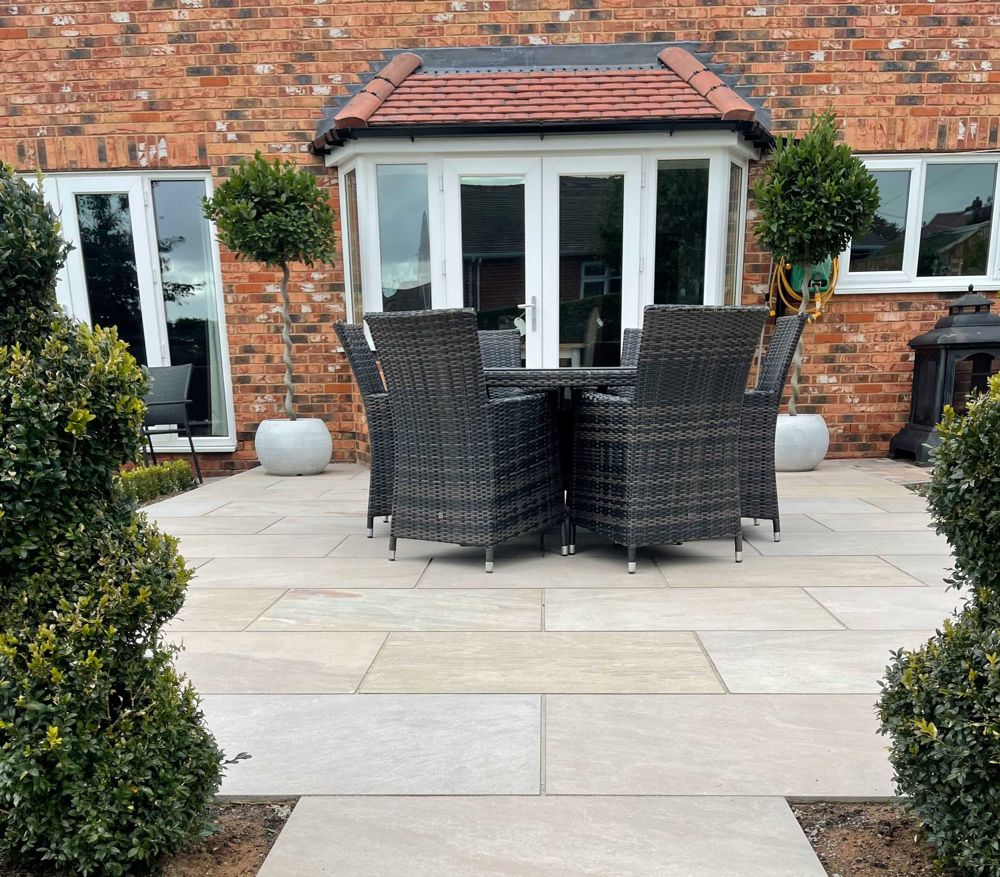
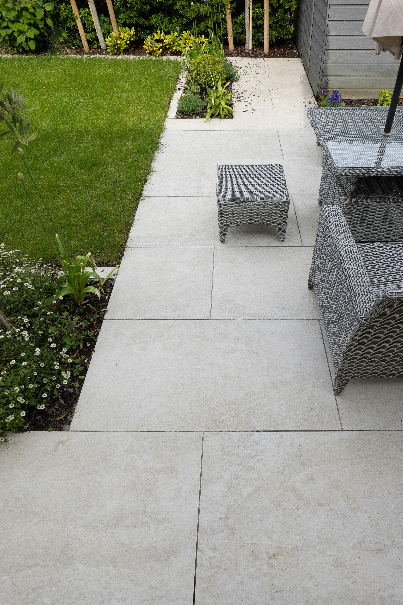
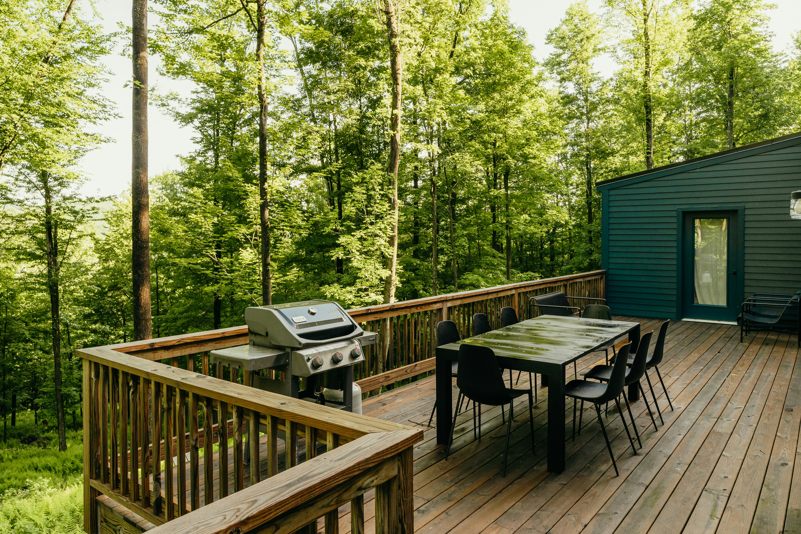

Levels
Finished paving must protect thresholds, damp courses and air bricks.

Patios & groundworks · Stourbridge area
Proper excavation, sound bases, sensible levels and effective drainage.
Built from the base up
We check ground, levels, water and thresholds before laying paving. Good preparation prevents movement and water problems later.

What matters
These details matter as much as the paving choice.
Finished paving must protect thresholds, damp courses and air bricks.
Falls and channels direct water away from the house.
Secure edges keep paving firm and steps safe.

Outside finish
Patio work can finish an extension properly. We cover Stourbridge, Wordsley, Kingswinford and Brierley Hill.
FAQs
Area, access, excavation and paving choice affect the price. We measure before quoting.
A simple patio often takes one to two weeks. Difficult access takes longer.
Usually not, unless levels or structures change significantly.
Falls and drainage must take water away from the house.
Both work well when installed with the correct base and jointing system.
Planning outside work?